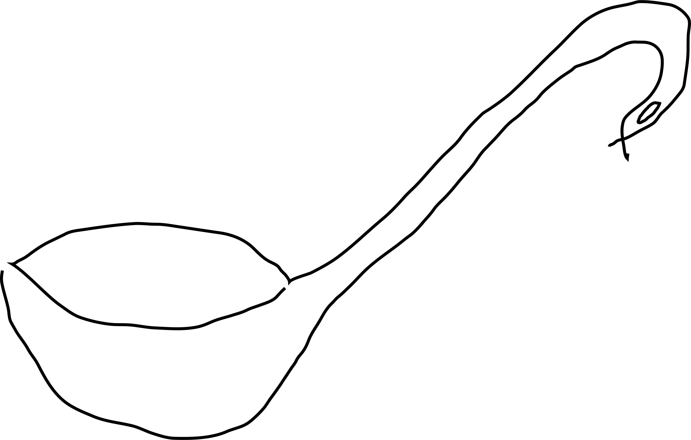
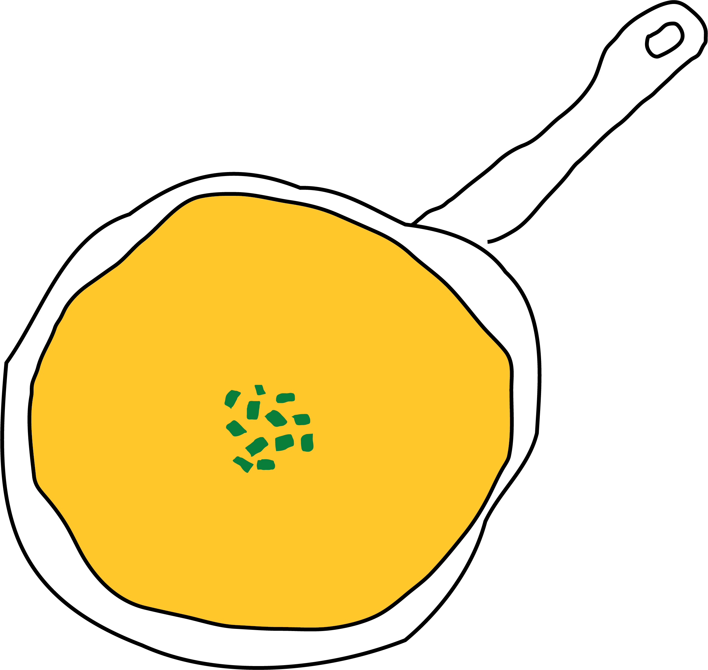
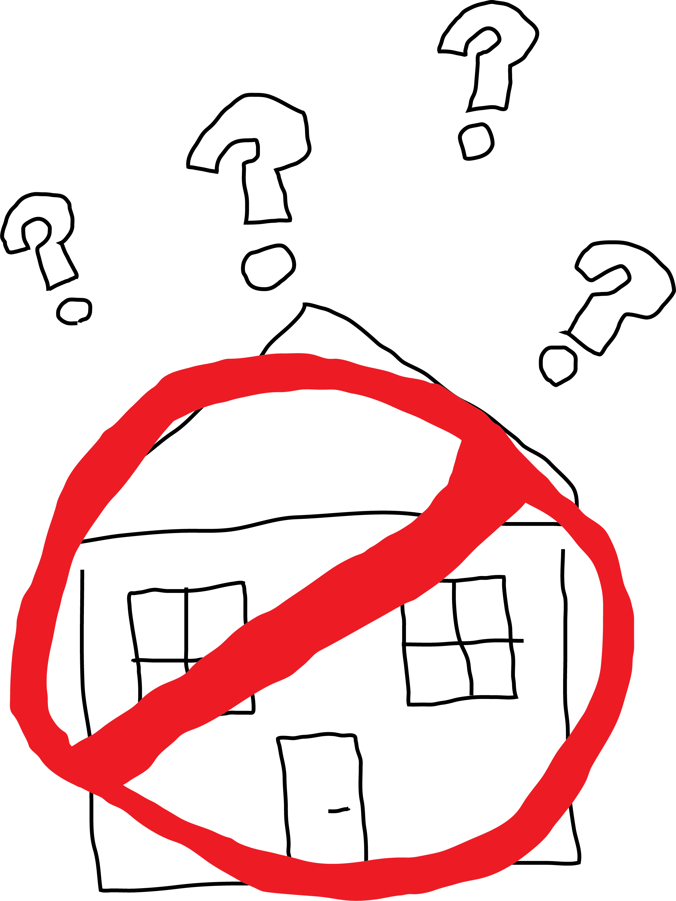
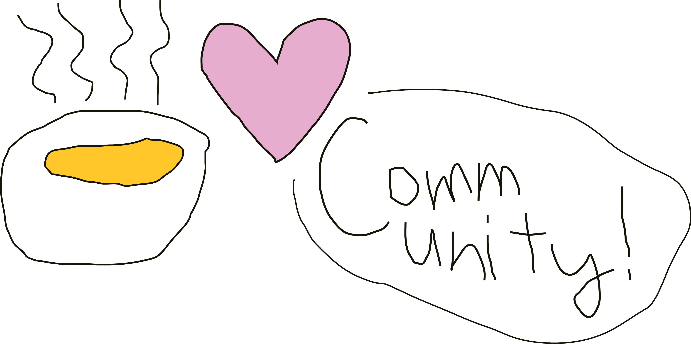

As of January 2026, the record for the most amount of homeless people inthe history of Ireland had been broken, with a number of 17,112 people homeless in Dublin, including thousands of children. Unfortunately, all the soup kitchen and homeless shelters know that they aren't the ones that are able to solve this.
So what can be done by us? This was the topic that we wanted to explore about through this short film, and we hoped that by exploring all of the mental pressures that a volunteer worker would be exposed, and also about how people can be affected by people that are homeless, whether that is directly or indirectly to highlight not what can be done - but what isn't there in the current homelessness climate.

Due to the governmental policies that have developed in Ireland in the last few decades of being more open to international interference of the market, this has resulted in Governmental policies that favour those of the market in Ireland, and less towards the institutions and the non-profit organisations.
This means that when it comes to emotional support of both the homeless population and those trying to help those people will only have the comunity that they are in to rely on each other for emotional support. We hope through this project that we manage to shift the perceptions of society in Ireland in a way that's more understanding of what they may have to go through, making them more sympathetic in the eyes of the general public.

With this charity, we ecnourage our potential client when they are considering a donation that if they are not sure of the amount, one euro of donations per month would be something we would be incredibly greatful for. Although not much from one person, a pool of these small donations can amount (and have) to significant amounts that have allowed us to support those who come to us every day.